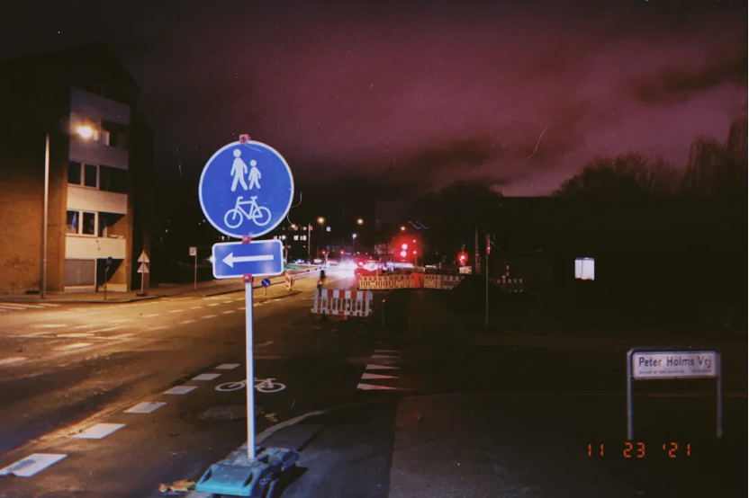
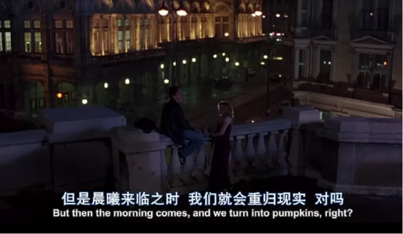
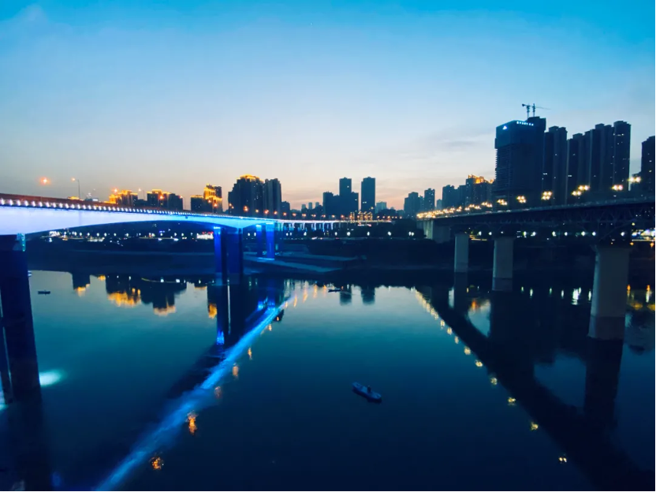
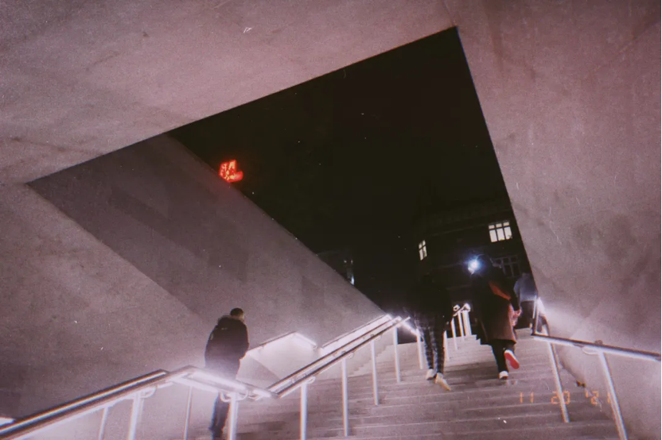
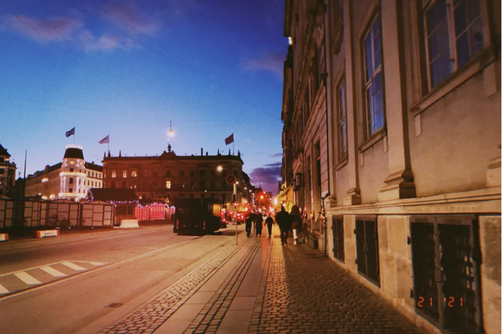
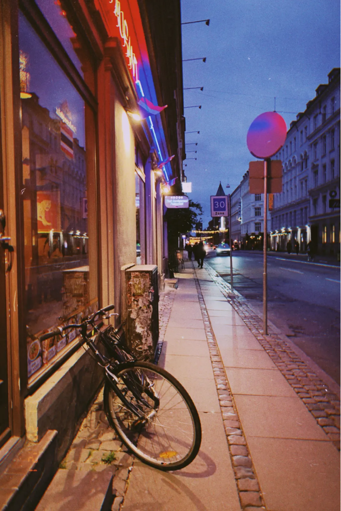

丹麦的黑夜来得出奇得早。忙完一天的学习，从教学楼走出来，天色已经渐渐变灰，周边的路灯一盏盏亮了起来。掏出手机一看，五点。
Night in Denmark comes surprisingly early. After a busy day of study, I walked out of the teaching building. The sky was gradually turning gray, and the surrounding streetlamps were lit up one by one. I took out my phone and looked at it, it was only five o'clock.
11月1日，丹麦正式进入冬令时。 刚来这里的时候，正值盛夏，大家一起谈论着对这个陌生国度的期许。但只要一讲起“dark winter”，每个人的表情都仿佛在说，这是个会吞噬一切的东西。但或许我是个怪人，我挺喜欢黑夜的。
On November 1st, Denmark officially entered wintertime. When I first came here, it was midsummer, and everyone talked about their expectations for this strange country. But as long as "dark winter" is mentioned, everyone's expression seems to be saying that this is something that will eat everything. But maybe I'm a weirdo, I kind of like the dark night.
黑夜总给人一种迷离恍惚的感觉。 每当自己置身其中，都如梦境一般，有时会怀疑其真实性，但它在某种程度上也给人一种踏实感。
The night always gives people a sense of blurred trance. Whenever I am in it, it is like a dream, and sometimes I doubt its authenticity, but it also gives people a sense of solidity to some extent.
我喜欢在黑夜里散步，而安全度极高的丹麦算是满足了我这个心愿。
I like to walk in the dark, and Denmark, which is very safe, has fulfilled my wish.
有一次我散步到凌晨三点，从宿舍一路跨过小巷，踩着石子路，走到海港，静静地坐在旁边的石凳上。这里的海面就跟朴实平凡的生活一样，没有什么跌宕起伏。周围空无一人，寂静一片。借着微弱的光线，只能看到海中央的起重机悬在半空，这已经是我所在地区的海面能看到的最高建筑物了。
Once I took a walk until three in the morning, crossed the alley all the way from the dormitory, stepped on the gravel road, walked to the harbor, and sat quietly on the stone bench beside me. The sea here is like a simple and ordinary life, without any ups and downs. There was no one around, and there was silence. With the weak light, only the crane in the middle of the sea can be seen hanging in the air, which is already the tallest building I can see from the sea in my area.
丹麦的夜景与重庆截然不同，这里没有高楼，也没有高架桥，更没有五颜六色的霓虹灯，而夜里的丹麦也总是那样寂静无声。 但这并不妨碍我喜欢重庆又喜欢丹麦。
Denmark's night scene is completely different from Chongqing's. There are no tall buildings, no viaducts, and no colorful neon lights. Denmark is always so silent at night. But that doesn't stop me from liking Chongqing and Denmark.
我喜欢重庆是因为它的烟火气，因为它给人一种看透生活却还是愿意温柔以待的感觉。
I like Chongqing because of the hustle and bustle of the city life, because it gives people a feeling of seeing through life but still willing to be gentle.
而喜欢丹麦或许是因为它的随性，因为它从未用力去装饰生活。
And I like Denmark maybe because of its casualness, because it has never tried to decorate life.
认真想想，我们所喜欢的一切，其实都是自己赋予了它们意义。而赋予的意义在很大程度上也表达了自己的向往，就好像我曾想温柔对待生活，如今又多了份对随性的期许。
If you think about it, everything we like is actually what we give them meaning. The meaning given to it also expresses my yearning to a large extent, as if I once wanted to treat life gently, but now I have more expectations for casualness.
前几天的讲座上，一位摄影师在展示自己的作品，全部都是黑白照片。有位同学问为什么拍黑白，老师被难倒，胡乱讲了一通。我跟朋友吐槽，为什么国外的人对所有东西都要强行赋予意义。好像对一件事情加上了意义，它就变得与众不同了。又仿佛如果一件事，你无法给它赋予意义，那它就毫无价值。而没价值的东西似乎就不值得存在一样。
In the lecture a few days ago, a photographer was showing his work, all of which were black and white photos. A classmate asked why he was shooting in black and white, and the teacher was stumped and talked about it indiscriminately. I complained to my friends why people from abroad have to impose meaning on everything. It's like adding meaning to a thing makes it different. It's as if something is worthless if you can't give it meaning. And things that are worthless don't seem worthy of existence.
曾经我那么迫切地想要给我的旅程强加上一些看似有用的意义，觉得自己一定要在旅途中遇到形形色色的人，了解不同的文化，这样这段旅程才有了意义。否则，我好像走过了那片土地，却又好像没有深入接触到什么东西。 而这不过是因为，大部分时候我们追求的快乐、给自己的人生所赋予的意义，都只是为了让自己跟大众达成同步。以为自己追求了大多数人的追求，自己的生命就有了意义，也就应该能得到快乐。
Once I was so desperate to impose some seemingly useful meaning on my journey, feeling that I had to meet all kinds of people and learn about different cultures on the journey, so that the journey would have meaning. Otherwise, I seem to have walked through the land without having touched anything deeply. And this is just because, most of the time, the happiness we pursue and the meaning we give to our lives are just to keep ourselves in sync with the public. If you think that you have pursued the pursuit of most people, your life will have meaning and you should be able to be happy.
但或许人生就是一个信念不断摧毁重建的过程。以前觉得需要进行人际交往，才能了解、见识得更多，但是现在慢慢发现，我其实并不热衷于与人交往，那这样，我就算见识到了我以前的信念认为我可以见识到的东西，但得来那些东西的过程也并不那么快乐。或者说，得到的东西也并非我愿。 所以对我来说，其实或许走出去，单纯看一看没见过的世界，才是我能赋予这段旅程最好的意义，因为这一切都根植于内心的踏实感。你只有感到心安，才会心甘情愿去做一件事情，也才会从中收获快乐。
But perhaps life is a process of constantly destroying and rebuilding beliefs. In the past, I felt that I needed to have interpersonal communication in order to understand and see more, but now I slowly realize that I am not really keen on socializing with people. In this way, even if I have seen what I believed I could see before, But the process of getting those things wasn't so happy either. In other words, what I got was not what I wanted. So for me, maybe going out and simply seeing the world I have never seen before is the best meaning I can give to this journey, because all of this is rooted in a sense of inner solidity. Only when you feel at ease will you be willing to do one thing and gain happiness from it.
有时候我总能在人群中找到踏实感，听着周围喧闹的声音，我的心反而平静下来。 而每个夜晚，我都会在漆黑中找到踏实感。在黑夜的笼罩下，所有的不完美都显得那样无足轻重。周围一片寂静，只有我的耳鸣嗡嗡作响，我能感受到自己的渺小，却又为自己的存在而暗自窃喜。
Sometimes I can always find a sense of steadiness in the crowd, and listening to the noisy sounds around me, my heart is calmed instead. And every night, I find a sense of solidity in the darkness. Under the shroud of darkness, all imperfections seem so insignificant. There was silence all around, except for the humming of my tinnitus, and I could feel my insignificance and secretly rejoice at my existence.
我融入人群却又远离人群。 或许我从未融入也无需融入，即使我跟人群有着千丝万缕的联系，我也只是在人群中的一个孤身之人，一个自由的个体。
I blend in with the crowd and stay away from the crowd. Maybe I have never blended in or need to blend in, even though I have inextricably linked with the crowd, I am just a lonely person in the crowd, a free individual.